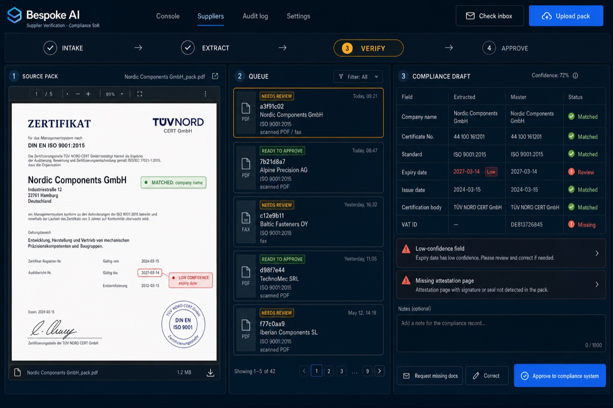
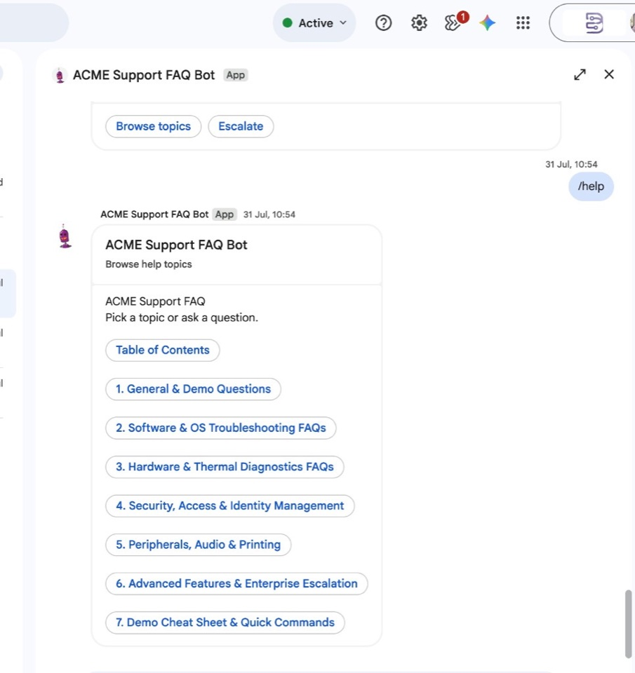

Case Studies
Production deployments under confidentiality agreements — specifics we can share on the page; client names and reference calls available under NDA.
Pattern map: document pipeline (supplier verification) · sales-order intake (PO → SO pilot) · request triage (smart inbox pilot) · knowledge-in-chat examples on discovery. Each study maps to a Where to Start playbook.
Supplier Verification for Regulated Supply Chains
Mid-size EU compliance platform · ~200 supplier onboardings/year · ~30% of packs arrive as scanned PDFs or fax
- Challenge
- Quality staff verified every supplier by hand — website research, then re-typing certification forms and signed attestations from PDFs and faxes into a spreadsheet before records entered the compliance system. A single supplier took 45 minutes on average. During onboarding spikes, records queued for days. External auditors had asked how unaudited data could enter the system.
- Approach
- One scoped workflow, live in 3 weeks: automated website collection where public data exists; document pipeline with confidence scoring — extractions below 85% routed to a human review queue, never into the compliance system; structured hand-off to the client's existing spreadsheet and compliance tool; audit log on every intake (source, fields, reviewer, timestamp, action). Client wanted faster auto-approval at week one — we held 100% human review until they'd processed 50+ records and signed off accuracy themselves.
- Outcome
- First 90 days (~80 suppliers): median handling time 45 min → 7 min; zero records entered without review; 12% of extractions flagged low-confidence, 3 corrected before approval. Client signed off partial automation at week 10.
- Client
- "We stopped re-typing pdf certificates. The review queue is the part our auditors actually cared about — every field has a source." — Head of Supplier Quality, EU regulated supply chain platform
Reference call available under NDA
{kind=link}

Customer Support Triage & Draft Replies
B2B SaaS provider · ~400 support emails/week · Team of 4 on a shared Microsoft 365 mailbox
- Challenge
- Urgent and frustrated messages sat in the same queue as routine enquiries — no reliable way to prioritise. Critical issues sometimes waited 24+ hours. Agents averaged 12 minutes drafting each reply from scratch, and tone varied widely across the team.
- Approach
- One scoped workflow, live in 2 weeks: intake from the existing shared mailbox; urgency and sentiment scoring on every message; AI-drafted replies saved to each agent's drafts folder — never sent automatically. Angry or critical messages trigger instant Slack alerts with a link to the thread. Client asked for auto-send on low-risk replies at week two — we kept human approval on every outbound message until they'd reviewed 100+ drafts.
- Outcome
- First 60 days (~1,600 emails): median time to flag urgent messages 4 min (was 24+ hrs); routine enquiries drafted within 2 hrs of arrival; 85% of drafts sent with minor edits only; zero messages sent without human approval.
- Client
- "Urgent tickets surface in Slack before we've even opened Outlook. The team edits drafts instead of staring at blank replies." — Support Operations Lead, B2B SaaS platform
Reference call available under NDA
{kind=link}

Purchase Order to Sales Order
Mid-size distributor · ~120 POs/week · shared order inbox · PDF/Word attachments
- Challenge
- Order desk staff re-typed every inbound purchase order into the ERP by hand. Buyers used regional shorthand and nicknames ("MEC", "2.5mm T&E") that did not match master SKUs, so wrong products and prices slipped through. Price mismatches and duplicate PO numbers were caught late — or not at all. There was no reliable review gate before rows hit the system of record.
- Approach
- One scoped workflow, live in 3 weeks: intake from the shared order mailbox (PDF/Word attachments); AI extraction of PO number, buyer, ship-to, line items, quantities, and prices — with explicit gaps when the document is unclear, never silent guessing; AI-assisted resolution of customer, SKU, and pricing against live master catalogs (alias and nickname matching included); discrepancy flags (price mismatch, unknown SKU, duplicate PO, missing ship-to); side-by-side approver console with the original document next to the digital draft; Correct applies verified master prices to known SKUs only; clarification emails drafted in-console and never auto-sent. Intake channels notify only — an Approver must click Approve before writeback. Client wanted auto-approve at launch — we held 100% human gate until they'd processed 100+ orders and signed off.
- Outcome
- First 90 days (~1,400 POs): median handling time 18 min → 4 min for clean matches; 14% routed to Needs Review (price/SKU exceptions), all resolved before sync; zero unapproved rows written to the ledger; client enabled optional auto-approve for 100% matched POs at week 11.
- Client
- "We stopped typing POs into the ERP and started resolving exceptions. Alias matching alone paid for the project — 'MEC' finally lands on the right customer every time." — Sales Operations Lead, mid-size distribution group
Reference call available under NDA